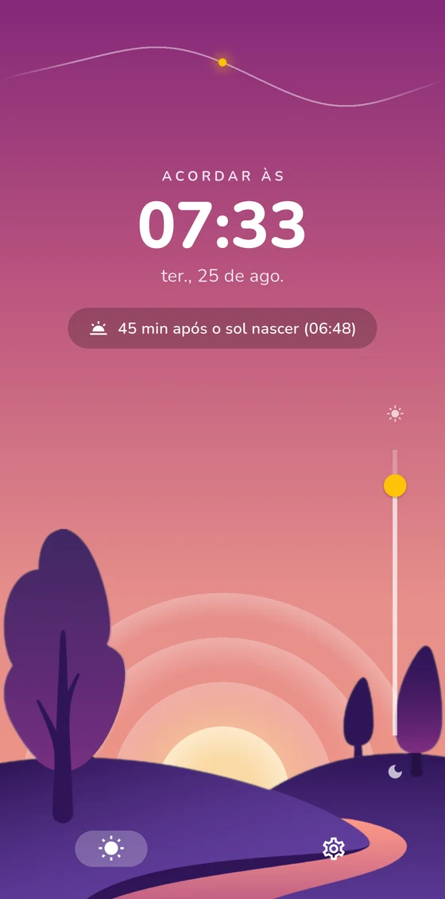

O nascer do sol muda um pouco todo dia. Seu alarme deveria mudar também. O Wake at Sunrise calcula o nascer do sol de amanhã para a sua localização exata e toca nesse momento — ou nos minutos antes ou depois que combinarem com você.

Como funciona
O app precisa saber em que ponto da Terra você acorda. É a única coisa que ele pede — e ela fica no seu celular.
Toque exatamente no nascer do sol, ou minutos antes ou depois. Escolha em quais dias da semana o alarme fica ativo.
Toda noite o alarme se reajusta silenciosamente para o nascer do sol de amanhã. Conforme o amanhecer se desloca ao longo do ano, seu despertar acompanha.
Recursos
Uma só tarefa — acordar você no amanhecer — feita com cuidado.
Não é a média da cidade — é o horário real do nascer do sol onde seu celular está, calculado no próprio aparelho com matemática astronômica.
Diga quanto sono você quer e quanto tempo precisa para desacelerar. O app conta de trás para frente a partir do amanhecer de amanhã e avisa na hora de ir para a cama.
Um gráfico de como o nascer do sol se desloca ao longo do ano — com um ponto no dia de hoje — para você saber para onde suas manhãs estão indo.
Toca sobre a tela de bloqueio, sobrevive a reinicializações e pode ignorar o volume do sistema, para um celular no silencioso não virar uma manhã perdida.
Sem serviço de clima, sem servidor. O nascer do sol é calculado localmente, então o alarme funciona em modo avião e longe de qualquer sinal.
Totalmente traduzido, com duração da soneca, volume e dias da semana configuráveis.
Privacidade
A única permissão relevante do app é a localização — e ela serve para exatamente uma coisa: calcular o nascer do sol onde você está.
Acesso antecipado
O Wake at Sunrise está em beta fechado no Android. Dois passos rápidos e ele é seu — seu feedback molda o lançamento.
O Google Play precisa da sua conta na lista de testadores antes de mostrar o app para você.
Entrar no grupoAbra este link no celular que você vai usar para testar, conectado nessa mesma conta do Google.
Abrir o teste no Google PlayTestar é gratuito e não há nada para comprar. Por favor, mantenha o app instalado por algumas semanas — o Google conta testadores contínuos antes de liberar um app novo.